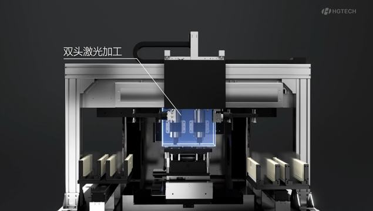
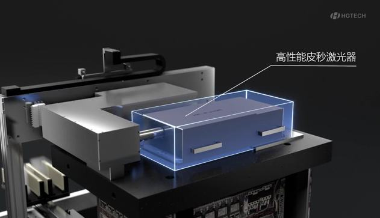
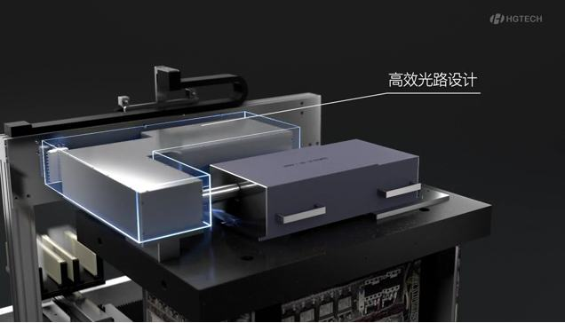

高性能显示玻璃构件是光学显示的基石，其制造质量对智能终端、平板显示、机载舰载显示等战略产业与装备的性能具有决定性影响。显示玻璃具有高硬度(>7级，超过钛合金)、低韧性(<1 MPa∙m1/2)的材料特性和超薄(100μm)的结构特征，对制造过程热、力等参量极度敏感，控制精度要求极高。现有CNC及水射流等接触式加工等单一能场制造存在严重局限，难以满足“极端服役工况、极限几何结构、极致光学性能”的严苛要求。项目组在行业龙头企业和国家重大重点项目支持下，历时十余年，产学研用联合攻关，发明显示玻璃构件光热力协同制造变革性技术，创新设计成套装备并实现产业化。取得一系列创新成果：
1)发明光热力耦合的玻璃材料可控成丝改性方法。构建光、热、力多能场耦合的超快激光动态击穿模型，设计贝塞尔整形的光热力协同激光光路系统，首次实现了超大深径比(2000:1)纵向成丝穿透，解决了硬脆材料激光加工“功率太小难穿透、功率太大易崩边”的矛盾。
2)发明超薄玻璃激光诱导微缝可控延展及损伤抑制技术。设计双光束光热诱导可控延展系统，实现切割崩边≤2.5µm，是所见报道国际最高水平，首次满足第四代Micro LED 100μm超薄玻璃崩边控制的极限性能要求。
3)发明热力梯度驱动的大厚玻璃封闭轮廓分离技术与装置。设计外热内冷热力梯度驱动的高效分离装置，形成温度场激励与内应力耦合的定向断裂驱动机制，率先实现了大厚玻璃构件封闭轮廓的激光切割。
4)创新设计了显示玻璃构件光热力协同加工装备。设计并研制了高性能显示玻璃构件光热力协同加工装备，构建工艺、装备与应用技术体系，颠覆原CNC工艺流程，实现了玻璃加工从接触式向非接触式工艺跨代。
近三年装备销售3445台套，新增销售263.72亿元(其中装备38.26亿元)，出口美、德、日等发达国家，超薄显示玻璃激光加工装备市场占有率全球第一(60%)，获工信部制造业单项冠军。批量应用于：智能终端全球前六的所有企业(华为、苹果、三星等)；新能源车销量全球第一的比亚迪等；智能手机玻璃盖板全球第一的伯恩光学等；高清投影透镜棱镜市场占有率全球第一的中光学。用于新型战机显示、舰艇桅杆导流罩等国之重器。
授权发明专利108件，登记软件著作权37项，制定国际/国家标准7项、团标/行标9项，发表SCI论文116篇。Science子刊评述“为精密玻璃工艺开辟了各种可能”，龙头企业蓝思评价“带来了革命性的工艺制程革新”。国防重点单位评价“提升巡航隐身性能”。中国机械工业联合会鉴定认为“整体国际领先”“引领了光学玻璃构件多能场复合制造技术的创新发展”。获机械工业科学技术进步一等奖、广东省科技进步一等奖。
（一）项目背景与总体思路
高性能显示玻璃构件是光学显示的基石，其制造质量对智能终端、平板显示、车载机载舰载显示等战略产业与装备的性能具有决定性影响。全球显示构件市场规模超1300亿美元，我国出货量占比63.3%，全球第一。以华为为代表的智能移动终端产业、以比亚迪为代表的新能源汽车产业、以京东方为代表的平板显示产业、以中光学为代表的高清投影等行业均对高性能显示玻璃构件提出巨大的需求。国家明确将“功能玻璃产品与技术装备”纳入产业结构调整的重点发展方向。我国《2035年远景目标纲要》中提出“加大玻璃生产工艺和装备研发力度”。开发高性能显示玻璃制造装备是国民经济和军工行业发展的必然方向之一。
高性能显示玻璃构件制造技术门槛高、装备投资巨大、长期被国外垄断，部分处于国际空白。新型显示行业制造装备投资往往以百亿元计，进口装备占总成本2/3以上。核心装备被发达国家垄断、长期依赖进口，如玻璃精密切割装备被德国LPKF、Trumpf 垄断，成为我国电子制造产业面临的“缺芯少屏”最重要的装备技术瓶颈。
随着技术更新换代，新一代显示玻璃构件不断向极端服役工况(高热高振高压)、极限几何结构(超薄超厚超长厚比)、极致光学性能(高透低反)方向发展，对其制造技术提出巨大挑战，如新一代显示急需的微米级超薄玻璃精密切割装备，水下舰艇急需的大厚度桅杆导流罩精密切割装备，车载机载显示超长厚比(1000:1)玻璃制造装备等严重制约战略产业和国防军工的发展。显示玻璃构件制造技术与装备水平，是衡量国家高端制造能力的重要标志之一。
显示玻璃构件采用非晶/微晶材料，具有高硬度(>7级，超过钛合金)、抗冲击性差(韧性<1 MPa∙m1/2，仅为普通金属的1/20)的材料特性和超薄(100μm)的结构特征，对制造过程热、力等参量极度敏感，控制精度要求极高，如超薄玻璃精密切割要求应力崩边极小(≤2.5μm)。传统接触式机械钻铣加工制造能场单一，切削力(约300N)极易引发颤振，冲击力大，导致不均匀崩边(宽度＞200μm)，甚至碎裂。水射流加工方式不仅加工质量难以保证，还存在环境污染等难题。
针对上述技术挑战，项目组联合高校及行业龙头企业，突破单一能场对硬脆玻璃制造的调控极限，创新提出光-热-力协同制造的变革性技术路径，设计了复杂异形玻璃超快激光成丝改性及精密切割新工艺与新装置，通过超快激光、CO2激光、热力等效应，对切割过程进行精密控制和能量场梯度诱导，实现了显示玻璃构件的高性能加工。
（二）详细技术创新内容
高硬脆玻璃采用现有CNC及水射流等接触式加工，存在冲击力大、易碎裂等难题。超快激光加工作为非接触式加工，具有无冲击力、热输入量小等优势，但依然存在微观裂纹难控、成丝深度不足等挑战，无法满足第四代Micro LED显示100μm超薄玻璃、舰艇桅杆导流罩等超规尺寸精密切割要求，严重制约我国显示产业换代和舰艇隐身性能提升，亟需发展光热力协同制造手段。
图3-1 超规玻璃光热力协同制造技术
创新设计一：发明光热力耦合的玻璃材料可控成丝改性方法。构建光、热、力多能场耦合的超快激光动态击穿模型，设计贝塞尔整形的光热力协同激光光路系统，发明贝塞尔光束整形的微观结构可控成丝改性技术，首次实现了超大深径比(2000:1)纵向成丝穿透，解决了硬脆材料激光加工“功率太小难穿透、功率太大易崩边”的矛盾。(发明专利30件：ZL202011209948.X等；软著8项；SCI论文51篇)[附件1;附件6;附件14;附件54;附件55等]
稳定的预置初始弱化区是玻璃精密切割的基础，基于金刚石及合金切割头划刻等传统弱化方式，不仅会在玻璃表面产生明显脆性损伤，如崩边和裂纹；同时由于仅在单面预置弱化区，导致上下表面裂纹扩展出现跟随误差，且玻璃越厚误差越大，从而降低切割质量。
为此，发明贝塞尔光束整形的微观结构可控成丝改性技术，设计贝塞尔整形的光热力协同激光光路系统，通过多组曲率定制设计的光学镜组将高能能量分布光束调整为直径更小、焦深更长的贝塞尔能量分布光束，实现了大深径比超快激光纵向成丝穿透，形成连续稳定的贯穿成丝，深径比首次突破2000:1连续且稳定的丝孔作为下一步裂纹控制锚点，保证了初始弱化区沿着玻璃厚度的应力分布均匀，同时微米级直径的丝孔显著提高表面切割质量。相比于机械切割导致的脆性损伤，超快激光成丝穿孔的边缘无脆性损伤，且热影响区≤5µm。如图3-2所示，能量＞1.4mJ、误差＜2%的皮秒脉冲在6-8mm玻璃上下表面形成直径3~4µm的稳定穿孔，作为封闭轮廓切割的初始损伤区域，无可观测的脆性损伤。
图3-2 皮秒激光束贝塞尔光束整形及在6mm玻璃形成稳定的无脆性损伤穿孔
创新设计二：发明超薄玻璃激光诱导微缝可控延展及损伤抑制技术。发明CO2激光诱导微缝孔间可控延展技术，设计双光束光热诱导系统，实现切割崩边≤2.5µm，是所见报道国际最高水平，首次满足了第四代Micro LED 100μm超薄显示玻璃加工崩边控制的极限性能要求。(发明专利26件：ZL201910388538.7等；软著8项；SCI论文39篇)[附件5;附件15;附件17;附件52;附件57等]
诱导裂纹扩展是实现玻璃构件精密切割关键，传统机械力诱导诱导裂纹扩展方式，如三点弯曲或者四点弯曲以及膨胀薄膜产生的拉应力。但对于较厚的玻璃存在驱动力不足、裂纹扩展不均匀，下表面易产生产生挤压碎裂等缺陷，且由于自由度受限而不适合封闭轮廓的切割。
该项目发明CO2激光热力梯度诱导微缝横向可控生长与延展技术，采用CO2激光束为加热源，通过将CO2激光束能量快速沉积到初始弱化区，控制快速加热与冷却过程产生的热力梯度以诱导微观应力，精准驱动裂纹沿着超快激光成丝穿孔形成的锚点进行扩展和聚集，设计双光束光热诱导系统，形成超快激光成丝穿孔间微缝稳定延展。从而保证了裂纹沿切割轨迹和玻璃深度方向均匀扩展，减小了上下表面的损伤，降低了解离面的粗糙度。对于2-12mm的玻璃，CO2激光热诱导裂纹扩展的速度达到超快激光成丝穿孔速度，达到200mm/s，且有效抑制崩边，超薄玻璃崩边≤2.5µm(德国LPKF指标5µm)，侧面粗糙度≤0.5µm，是所见报道国际最高水平。
图3-3 CO2激光诱导裂纹扩展与极窄崩边无裂纹侧面粗糙度小的断面
创新设计三：发明热力梯度驱动的大厚玻璃封闭轮廓分离技术与装置。发明切缝局部温度及应力梯度协同的封闭轮廓高效分离技术，设计外热内冷热力梯度驱动高效分离装置，形成温度场激励与内应力耦合的定向断裂驱动机制，率先实现了大厚玻璃构件封闭轮廓的激光切割。(发明专利20件：ZL202111614332.5等；软著11项；SCI论文26篇)[附件9;附件10;附件19;附件53;附件55等]
玻璃切割解离面分离是玻璃封闭轮廓切割的核心，传统超快激光切割仅能实现直线、曲率半径较大的非封闭曲线轮廓切割，切割封闭轮廓特征需要配合如腐蚀、热冲击等辅助手段，但也仅能实现厚度≤0.55mm玻璃的切割，大厚玻璃封闭轮廓激光切割国际空白。
该项目首创了厚玻璃封闭大孔热力梯度诱导下微力聚集延展的封闭轮廓上下高效分离技术，设计外热内冷热力梯度驱动高效分离装置，基于纵向成丝穿透及横向裂纹可控延展技术，通过精确控制封闭孔基板与孔内余料的温度差，突破玻璃较大热膨胀特性的热-力场协同梯度驱动微观解离面分离和宏观封闭轮廓切割，实现大厚玻璃封闭轮廓余料高效无损分离。如图3-4所示，突破了厚度0.1~12mm多品类玻璃封闭轮廓高质量切割与分离，协同加载分离时间＜5s，边缘崩边≤10µm，侧面粗糙度≤0.5µm，切孔成功率≥99.2%，实现了大厚度玻璃构件封闭轮廓激光切割国际零的突破。
图3-4 玻璃封闭轮廓基板/余料热力协同分离技术及装置
创新设计四：设计并研制了显示玻璃构件光热力协同加工装备，构建工艺、装备与应用技术体系，颠覆原CNC工艺流程，实现玻璃加工从接触式向非接触式工艺跨代，收入IEEE国际标准和国家标准。实现产业化应用，超薄玻璃精密切割装备市场占有率全球第一，获工信部制造业单项冠军。(发明专利32件：ZL201610693070.9等；软著10项；国际/国家等标准7项：IEEE Std 2999TM-2023、IEEE Std 2065TM-2020等)[附件3;附件17;附件18;附件41;附件45，46，47等]
(a)超薄玻璃构件激光切割装备 (b)大厚度玻璃构件封闭轮廓精密切割装备
图3-5 高性能显示玻璃构件光热力协同加工装备
设计并研制了显示玻璃构件光热力协同加工装备，首次满足了第四代Micro LED 100μm超薄显示屏、折叠屏手机30μm超薄玻璃的激光精密制造性能要求，国际首次解决了大厚度(≥10mm)桅杆导流罩的封闭轮廓精密切割，规模化应用于车载机载超长厚比智能驾舱显示玻璃构件的高性能制造。构建工艺、装备与应用技术体系，颠覆原CNC工艺流程，实现玻璃加工从接触式向非接触式工艺跨代，收入IEEE国际标准和国家标准。超薄玻璃精密切割装备市场占有率全球第一，获工信部制造业单项冠军。
（三）与当前国内外同类技术的主要指标和效果对比
在显示玻璃构件制造装备方面，德国LPKF、Trumpf在精密切割装备方面处于国际领先地位。该项目成果与国际标杆企业的主要指标对比如表3-1所示。从对比结果来看，该项目研制装备的切割崩边控制、最大切割厚度等关键技术指标均明显优于国际标杆企业。
表3-1 显示玻璃构件精密加工装备主要技术指标对比
技术指标
德国LPKF
德国Trumpf
本项目
对比结论
重复定位精度（μm）
±0.8
±0.8
±0.5
优于国外
定位精度（μm）
±2
±1.5
±1
优于国外
崩边（μm）
≤5
≤5
≤2.5
优于国外
最大切割厚度（mm）
≤5
≤8
≤12，封闭轮廓
填补空白
封闭轮廓分离效率（s）
/
/
≤8.1(厚12mm、Φ150mm)
填补空白
成丝穿孔最大深径比
/
/
≥2000:1
填补空白
注：该项目数据来自国家智能加工装备质量检验检测中心等第三方检测机构，LPKF、Trumpf设备数据参数来源于官方网站或公开报道。
项目成果实现玻璃从接触式CNC加工向超快激光非接触式加工的工艺跨代，迫使德国企业在中国市场份额从70%降到不足2%，LPKF几乎退出中国市场，彻底改变了高性能显示玻璃构件高端制造装备的市场格局。



高硬度超薄显示玻璃光热力协同加工,攻克 CNC/水射流接触式加工瓶颈
装备外形服务于加工精度,功能化造型
间接服务智能终端/车载显示的日常体验
显示玻璃战略产业,带动光热力加工装备链
高端制造国产化的行业级突破